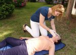
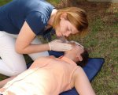
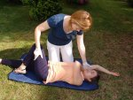

Utrata przytomności to stan zagrożenia życia.
Najczęściej jest efektem urazu, wstrząsu lub stanu
chorobowego. W jej następstwie może dojść do niedrożność
dróg oddechowych na skutek zablokowania ich językiem,
ciałem obcym lub treścią żołądka powodując bezdech, a po
kilkudziesięciu sekundach zatrzymanie krążenia. Dlatego
umiejętność udzielenia pierwszej pomocy osobie nieprzytomnej
jest niezwykle ważna. Przedstawiamy zatem podstawowe czynności,
które powinien podjąć każdy z nas w przypadku rozpoznania
utraty przytomności.
Wobec człowieka leżącego na chodniku, przystanku, czy w parku nie wolno nam przechodzić
obojętnie. Niezależnie od przyczyny, z jakiej się tam znajduje: choroby, zasłabnięcia,
zatrucia narkotykami, czy nadużycia alkoholu, człowiek ten znajduje się w sytuacji, w której
jego życie jest zagrożone. A każdy z nas w takich okolicznościach ma obowiązek udzielenia
pomocy (art.162 KK).
Nasze działania zawsze rozpoczynamy od oceny bezpieczeństwa.
Może się bowiem zdarzyć, że wciąż istnieje zagrożenie, które doprowadziło do
utraty przytomności u poszkodowanego. Ponadto zawsze zabezpieczamy swoje ręce
rękawiczkami, by nie narażać własnego zdrowia i życia.
Następnie przechodzimy do sprawdzenia stanu przytomności,
drożności dróg oddechowych oraz oddechu osoby nieprzytomnej.
Jeżeli to możliwe, czynności te wykonujemy w takiej pozycji,
w jakiej zastaliśmy nieprzytomne-go w tzw. pozycji zastanej.
Jeśli nie, delikatnie układamy poszkodowanego na plecach.

Określając stan przytomności sprawdzamy reakcje na bodźce zewnętrzne (głos, dotyk) -
brak reakcji oznacza brak przytomności. U nieprzytomnego niezwykle ważne jest sprawdzenie
drożności dróg oddechowych i oddechu. W celu udrożnienia dróg oddechowych otwieramy usta poszkodowanego i sprawdzamy, czy w jamie ustnej nie znajdują się ciała obce. Jeżeli są, to usuwamy je na zewnątrz. Następnie odchylamy jego głowę do tyłu, trzymając jedną rękę na czole, a drugą pod brodą (unosimy żuchwę do góry). Przy udrożnionych drogach oddechowych sprawdzamy oddech. Sprawdzając oddech posługujemy się schematem: słyszę, czuję, widzę. Pochylamy się nad głową poszkodowanego przybliżając swoje ucho do jego ust i nosa oraz kładziemy rękę na jego klatce piersiowej. O obecności oddechu świadczą: szmer wdychanego powietrza (słyszymy), ciepło wydychanego powietrza
(czujemy) oraz ruchy klatki piersiowej (widzimy, czujemy). Na sprawdzenie oddechu należy
poświęcić ok. 10 sek., w tym czasie
powinniśmy zaobserwować co najmniej 2 prawidłowe
oddechy. Dalsze działania ratownicze zależeć będą
od tego, co stwierdzimy we wstępnej ocenie stanu
poszkodowanego. Jeśli oddycha i we wstępnej ocenie nie
stwierdzimy niekontrolowanych krwotoków i urazów, sprawdzamy,
czy nie jest to omdlenie.